Analysis of Prehistoric Iconography with the R package iconr
Birth of statistics

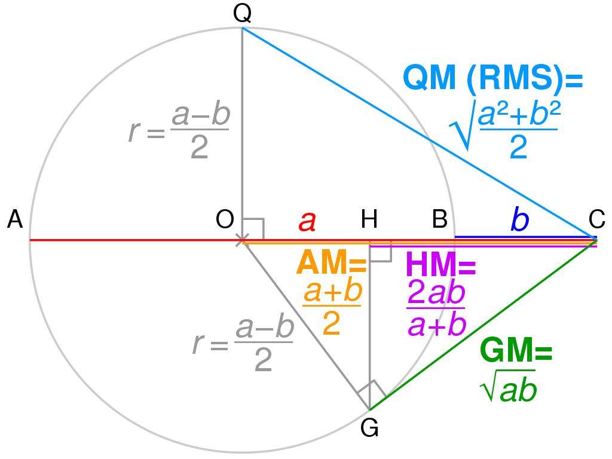

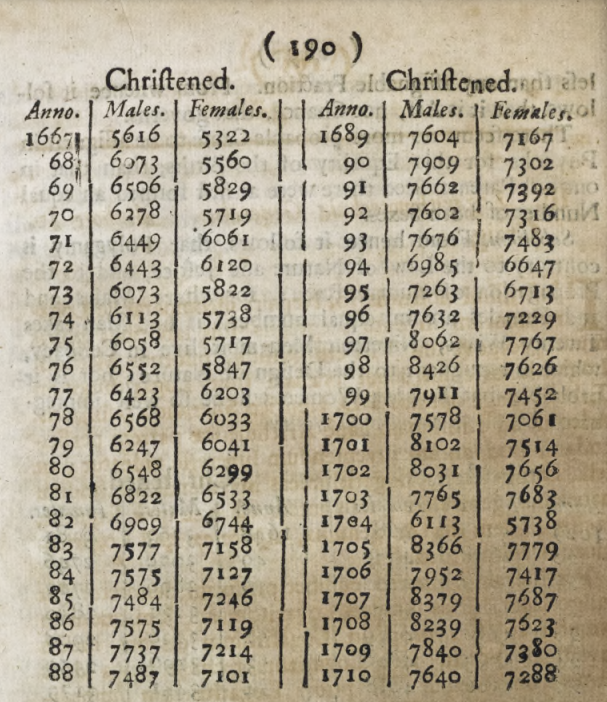

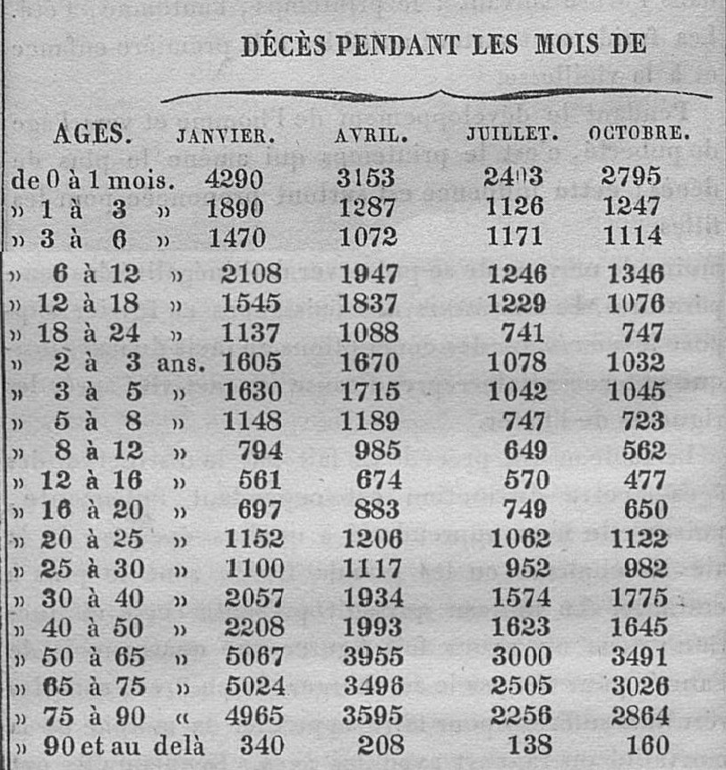

Type of statistics
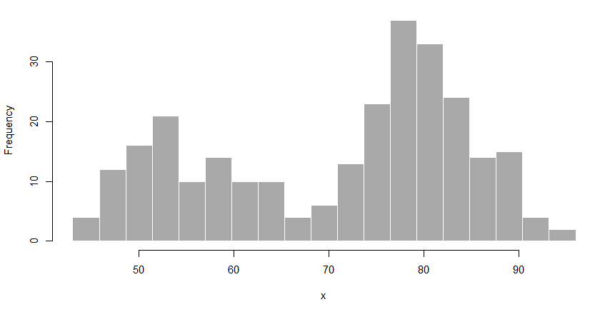
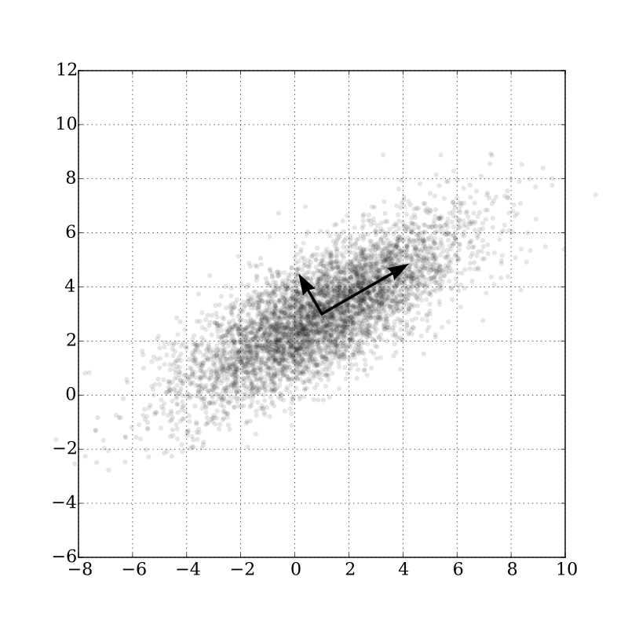

Describe the population with the mean (μ), the median (M) and standard deviation (σ)
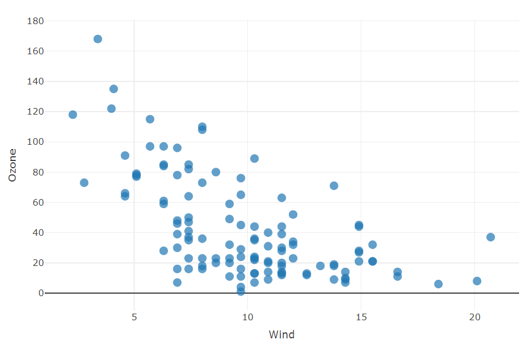
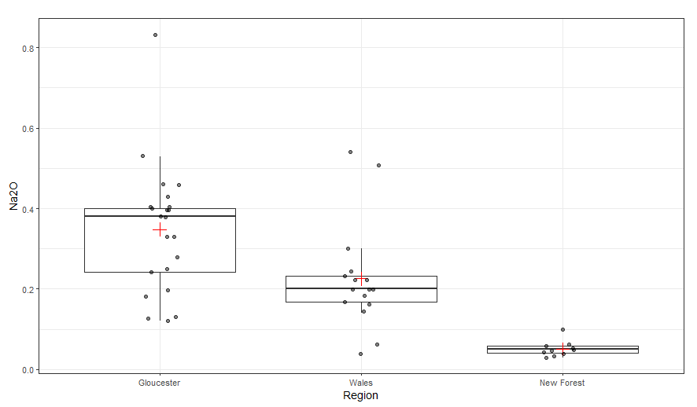
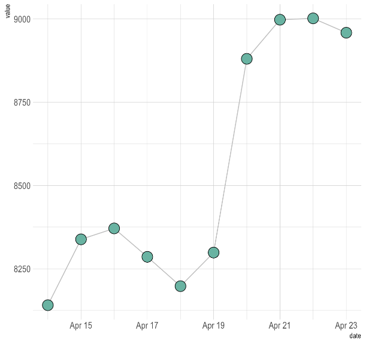
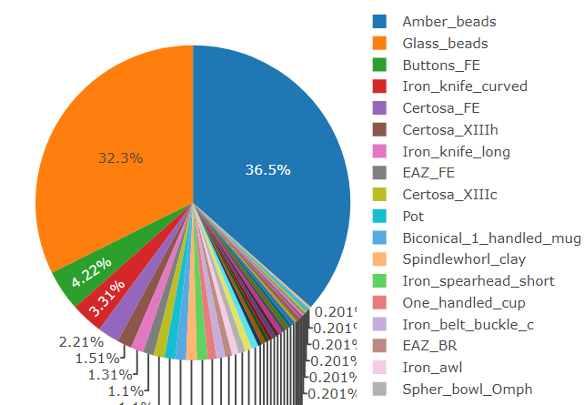
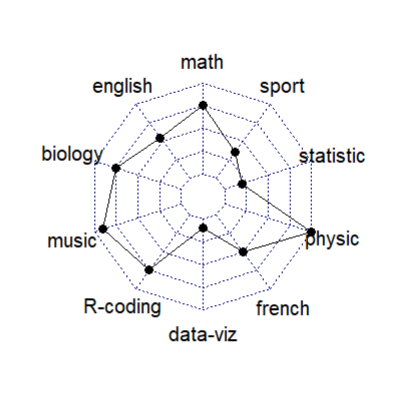
Clustering method, we move from a description to a modelling identifying central tendencies
Test of
- conformity (goodness-of-fit) between the observed population and a theoritical distribution (eg. normal law)
- homogeneity between different populations
- relation between several variables from the same population
Comparisons
where when what
A 20 10 70
B 60 30 10
C 60 20 20
| cor | interpretation |
|---|---|
| 1 | … |
| 0.9 | oustanding |
| 0.8 | excellent |
| 0.7 | acceptable |
| 0.6 | weak |
| … | … |
Coefficient of correlation (Spearman’s ρ, Pearson’s r, etc.) and coefficient of determination (R2), between
[-1:1]
Models
Box, 1976
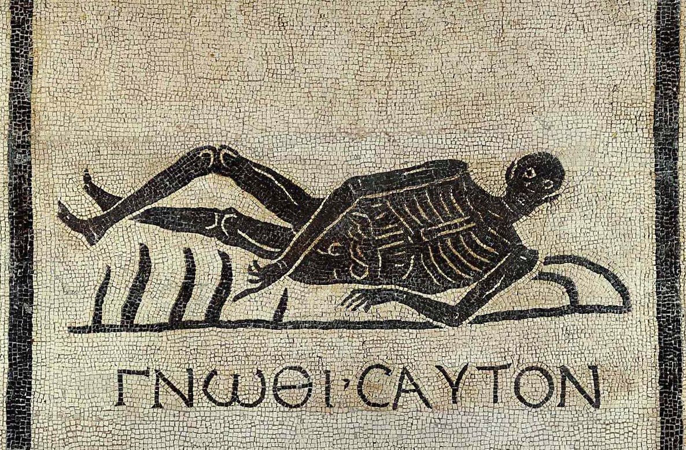
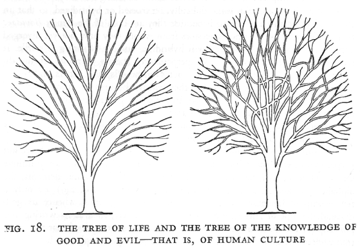
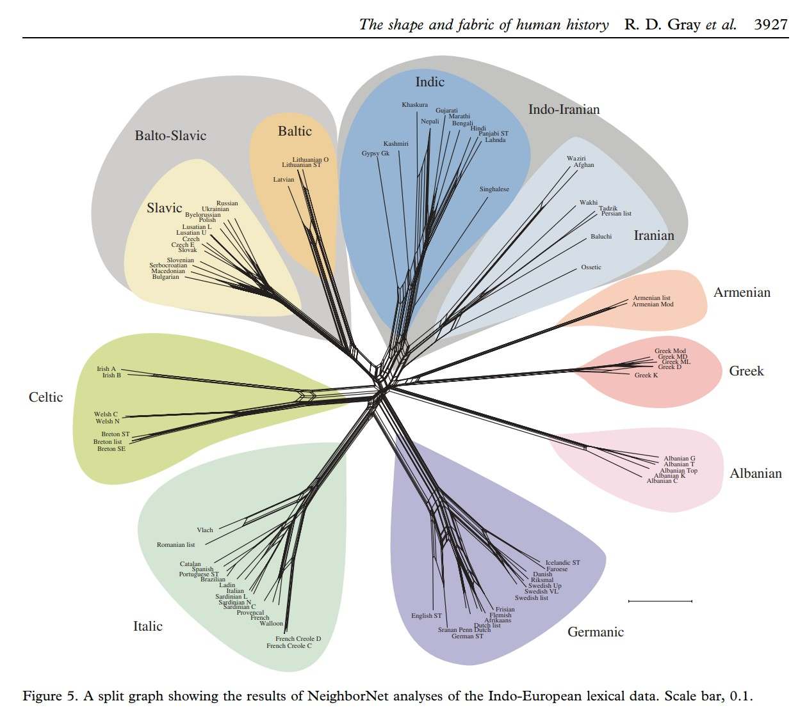
| propriety | description | example |
|---|---|---|
| Explanatory | not over- or under-fitting | 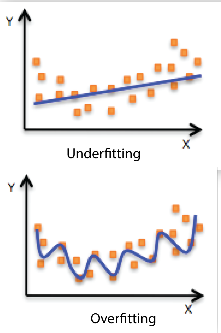 |
| Regularity | central tendencies: reproducing data regularity | 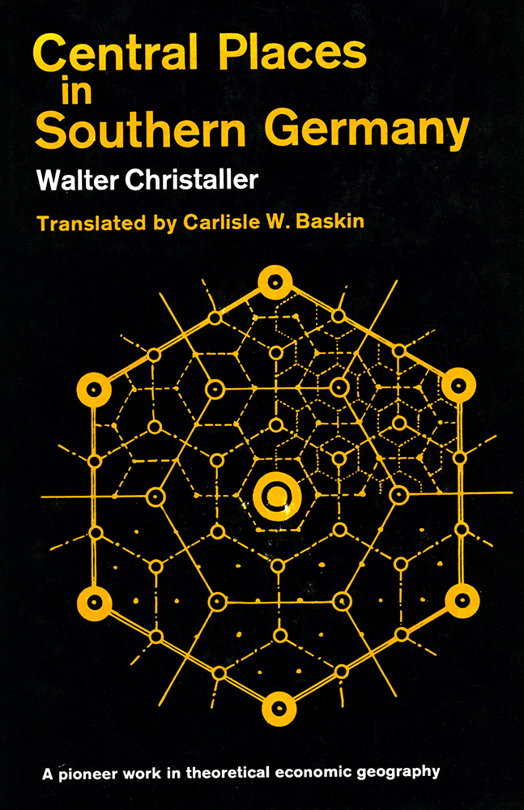 |
| Robust | replicable: not sensitive to small changes in data | 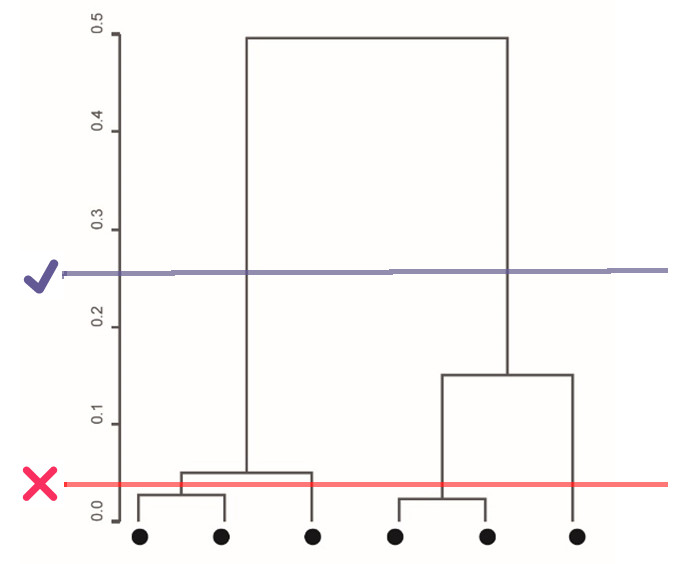 |
| Parsimonious | all things being equal, the simplest possible explanation for a phenomenon is also the most probable |

|
| Versioning | carry its own story: abandoned assumptions, alternative versions, etc. |
Data
| type | description |
|---|---|
| Raw data | Primary data acquired via a device (hardware) and not processed |
| Processed data | Working data processed but not definitive |
| Aggregated data | Data is gathered and expressed in a summary form |
| Metadata | Data about data |
| Missing data |
Lack of knowledge, eg. NA (Not Available)
|
Raw data
# Radiocarbon probability densities
library(rcarbon)
dirIn <- "https://raw.githubusercontent.com/zoometh/neonet/main/inst/extdata/"
fileIn <- "140_140_id00140_doc_elencoc14.tsv"
dataIn <- paste0(dirIn, fileIn)
C14 <- read.csv2(dataIn, sep = "\t")
C14cal <- calibrate(x = C14[1, "C14Age"],
errors = C14[1, "C14SD"],
calCurves='intcal20')[1] "Calibrating radiocarbon ages..."
|
| | 0%
|
|======================================================================| 100%[1] "Done."$`1`
calBP PrDens
1 6281 1.028478e-05
2 6280 1.147756e-05
3 6279 1.276630e-05
4 6278 1.418626e-05
5 6277 1.574913e-05
6 6276 1.746748e-05
7 6275 1.935473e-05
8 6274 2.120499e-05
9 6273 2.321429e-05
10 6272 2.539438e-05
11 6271 2.775771e-05
12 6270 3.031744e-05
13 6269 3.266051e-05
14 6268 3.516310e-05
15 6267 3.783427e-05
16 6266 4.068343e-05
17 6265 4.372034e-05
18 6264 4.593214e-05
19 6263 4.824143e-05
20 6262 5.065168e-05
21 6261 5.316644e-05
22 6260 5.578933e-05
23 6259 5.640350e-05
24 6258 5.702426e-05
25 6257 5.765166e-05
26 6256 5.828576e-05
27 6255 5.892661e-05
28 6254 5.722164e-05
29 6253 5.555994e-05
30 6252 5.394062e-05
31 6251 5.236281e-05
32 6250 5.082566e-05
33 6249 4.795295e-05
34 6248 4.522323e-05
35 6247 4.263064e-05
36 6246 4.016950e-05
37 6245 3.783427e-05
38 6244 3.492808e-05
39 6243 3.222096e-05
40 6242 2.970139e-05
41 6241 2.735834e-05
42 6240 2.518126e-05
43 6239 2.348750e-05
44 6238 2.189782e-05
45 6237 2.040659e-05
46 6236 1.900843e-05
47 6235 1.769821e-05
48 6234 1.678750e-05
49 6233 1.591932e-05
50 6232 1.509193e-05
51 6231 1.430365e-05
52 6230 1.355285e-05
53 6229 1.340705e-05
54 6228 1.326267e-05
55 6227 1.311971e-05
56 6226 1.297814e-05
57 6225 1.283796e-05
58 6224 1.316134e-05
59 6223 1.349260e-05
60 6222 1.383194e-05
61 6221 1.417953e-05
62 6220 1.453556e-05
63 6219 1.525454e-05
64 6218 1.600555e-05
65 6217 1.678982e-05
66 6216 1.760862e-05
67 6215 1.846327e-05
68 6214 1.969977e-05
69 6213 2.101012e-05
70 6212 2.239809e-05
71 6211 2.386758e-05
72 6210 2.542261e-05
73 6209 2.734166e-05
74 6208 2.938855e-05
75 6207 3.157039e-05
76 6206 3.389456e-05
77 6205 3.636874e-05
78 6204 3.885590e-05
79 6203 4.149454e-05
80 6202 4.429243e-05
81 6201 4.725762e-05
82 6200 5.039846e-05
83 6199 5.347367e-05
84 6198 5.671454e-05
85 6197 6.012845e-05
86 6196 6.372297e-05
87 6195 6.750591e-05
88 6194 7.158474e-05
89 6193 7.587501e-05
90 6192 8.038533e-05
91 6191 8.512448e-05
92 6190 9.010147e-05
93 6189 9.586029e-05
94 6188 1.019287e-04
95 6187 1.083192e-04
96 6186 1.150442e-04
97 6185 1.221166e-04
98 6184 1.300832e-04
99 6183 1.384784e-04
100 6182 1.473185e-04
101 6181 1.566200e-04
102 6180 1.663993e-04
103 6179 1.757868e-04
104 6178 1.856051e-04
105 6177 1.958675e-04
106 6176 2.065872e-04
107 6175 2.177777e-04
108 6174 2.292251e-04
109 6173 2.411602e-04
110 6172 2.535966e-04
111 6171 2.665475e-04
112 6170 2.800262e-04
113 6169 2.901564e-04
114 6168 3.005712e-04
115 6167 3.112750e-04
116 6166 3.222722e-04
117 6165 3.335671e-04
118 6164 3.395873e-04
119 6163 3.456900e-04
120 6162 3.518754e-04
121 6161 3.581443e-04
122 6160 3.644969e-04
123 6159 3.596302e-04
124 6158 3.548129e-04
125 6157 3.500450e-04
126 6156 3.453262e-04
127 6155 3.406561e-04
128 6154 3.269362e-04
129 6153 3.136462e-04
130 6152 3.007787e-04
131 6151 2.883263e-04
132 6150 2.762813e-04
133 6149 2.587197e-04
134 6148 2.420481e-04
135 6147 2.262393e-04
136 6146 2.112654e-04
137 6145 1.970982e-04
138 6144 1.840935e-04
139 6143 1.718084e-04
140 6142 1.602143e-04
141 6141 1.492831e-04
142 6140 1.389867e-04
143 6139 1.314369e-04
144 6138 1.242396e-04
145 6137 1.173824e-04
146 6136 1.108526e-04
147 6135 1.046382e-04
148 6134 1.024393e-04
149 6133 1.002798e-04
150 6132 9.815916e-05
151 6131 9.607687e-05
152 6130 9.403238e-05
153 6129 9.649029e-05
154 6128 9.900278e-05
155 6127 1.015708e-04
156 6126 1.041952e-04
157 6125 1.068771e-04
158 6124 1.141566e-04
159 6123 1.218573e-04
160 6122 1.299975e-04
161 6121 1.385960e-04
162 6120 1.476720e-04
163 6119 1.601387e-04
164 6118 1.734578e-04
165 6117 1.876683e-04
166 6116 2.028092e-04
167 6115 2.189195e-04
168 6114 2.362850e-04
169 6113 2.547224e-04
170 6112 2.742691e-04
171 6111 2.949613e-04
172 6110 3.168337e-04
173 6109 3.361553e-04
174 6108 3.563569e-04
175 6107 3.774568e-04
176 6106 3.994718e-04
177 6105 4.224179e-04
178 6104 4.344023e-04
179 6103 4.466473e-04
180 6102 4.591555e-04
181 6101 4.719293e-04
182 6100 4.849712e-04
183 6099 4.842735e-04
184 6098 4.835884e-04
185 6097 4.829160e-04
186 6096 4.822562e-04
187 6095 4.816091e-04
188 6094 4.690795e-04
189 6093 4.567849e-04
190 6092 4.447246e-04
191 6091 4.328977e-04
192 6090 4.213030e-04
193 6089 4.054318e-04
194 6088 3.900229e-04
195 6087 3.750694e-04
196 6086 3.605646e-04
197 6085 3.465013e-04
198 6084 3.311927e-04
199 6083 3.164040e-04
200 6082 3.021263e-04
201 6081 2.883503e-04
202 6080 2.750665e-04
203 6079 2.641682e-04
204 6078 2.536112e-04
205 6077 2.433894e-04
206 6076 2.334964e-04
207 6075 2.239257e-04
208 6074 2.201749e-04
209 6073 2.164885e-04
210 6072 2.128654e-04
211 6071 2.093049e-04
212 6070 2.058061e-04
213 6069 2.065872e-04
214 6068 2.073708e-04
215 6067 2.081567e-04
216 6066 2.089451e-04
217 6065 2.097359e-04
218 6064 2.159296e-04
219 6063 2.222763e-04
220 6062 2.287785e-04
221 6061 2.354390e-04
222 6060 2.422604e-04
223 6059 2.478772e-04
224 6058 2.535966e-04
225 6057 2.594196e-04
226 6056 2.653474e-04
227 6055 2.713810e-04
228 6054 2.682287e-04
229 6053 2.651062e-04
230 6052 2.620134e-04
231 6051 2.589501e-04
232 6050 2.559162e-04
233 6049 2.467462e-04
234 6048 2.378399e-04
235 6047 2.291928e-04
236 6046 2.207998e-04
237 6045 2.126563e-04
238 6044 2.059496e-04
239 6043 1.994317e-04
240 6042 1.930987e-04
241 6041 1.869465e-04
242 6040 1.809711e-04
243 6039 1.795730e-04
244 6038 1.781838e-04
245 6037 1.768034e-04
246 6036 1.754318e-04
247 6035 1.740689e-04
248 6034 1.758520e-04
249 6033 1.776563e-04
250 6032 1.794821e-04
251 6031 1.813294e-04
252 6030 1.831985e-04
253 6029 1.853268e-04
254 6028 1.874752e-04
255 6027 1.896440e-04
256 6026 1.918332e-04
257 6025 1.940430e-04
258 6024 1.970216e-04
259 6023 2.000372e-04
260 6022 2.030903e-04
261 6021 2.061811e-04
262 6020 2.093099e-04
263 6019 2.137875e-04
264 6018 2.183453e-04
265 6017 2.229841e-04
266 6016 2.277046e-04
267 6015 2.325077e-04
268 6014 2.385437e-04
269 6013 2.447043e-04
270 6012 2.509911e-04
271 6011 2.574056e-04
272 6010 2.639493e-04
273 6009 2.726002e-04
274 6008 2.815166e-04
275 6007 2.907045e-04
276 6006 3.001701e-04
277 6005 3.099195e-04
278 6004 3.322853e-04
279 6003 3.559463e-04
280 6002 3.809452e-04
281 6001 4.073233e-04
282 6000 4.351198e-04
283 5999 4.752895e-04
284 5998 5.181050e-04
285 5997 5.636191e-04
286 5996 6.118713e-04
287 5995 6.628865e-04
288 5994 7.012234e-04
289 5993 7.409680e-04
290 5992 7.821111e-04
291 5991 8.246379e-04
292 5990 8.685284e-04
293 5989 9.160528e-04
294 5988 9.650155e-04
295 5987 1.015372e-03
296 5986 1.067072e-03
297 5985 1.120055e-03
298 5984 1.137990e-03
299 5983 1.156057e-03
300 5982 1.174254e-03
301 5981 1.192579e-03
302 5980 1.211027e-03
303 5979 1.192782e-03
304 5978 1.174674e-03
305 5977 1.156704e-03
306 5976 1.138875e-03
307 5975 1.121190e-03
308 5974 1.093556e-03
309 5973 1.066280e-03
310 5972 1.039369e-03
311 5971 1.012832e-03
312 5970 9.866756e-04
313 5969 9.579901e-04
314 5968 9.297507e-04
315 5967 9.019676e-04
316 5966 8.746497e-04
317 5965 8.478053e-04
318 5964 8.282028e-04
319 5963 8.088750e-04
320 5962 7.898241e-04
321 5961 7.710518e-04
322 5960 7.525596e-04
323 5959 7.427055e-04
324 5958 7.329429e-04
325 5957 7.232719e-04
326 5956 7.136925e-04
327 5955 7.042045e-04
328 5954 7.081142e-04
329 5953 7.120378e-04
330 5952 7.159754e-04
331 5951 7.199270e-04
332 5950 7.238925e-04
333 5949 7.436181e-04
334 5948 7.636969e-04
335 5947 7.841279e-04
336 5946 8.049100e-04
337 5945 8.260416e-04
338 5944 8.563218e-04
339 5943 8.872705e-04
340 5942 9.188794e-04
341 5941 9.511387e-04
342 5940 9.840373e-04
343 5939 1.022921e-03
344 5938 1.062565e-03
345 5937 1.102942e-03
346 5936 1.144019e-03
347 5935 1.185761e-03
348 5934 1.225274e-03
349 5933 1.265328e-03
350 5932 1.305891e-03
351 5931 1.346929e-03
352 5930 1.388406e-03
353 5929 1.421738e-03
354 5928 1.455333e-03
355 5927 1.489170e-03
356 5926 1.523228e-03
357 5925 1.557484e-03
358 5924 1.586227e-03
359 5923 1.615058e-03
360 5922 1.643965e-03
361 5921 1.672933e-03
362 5920 1.701947e-03
363 5919 1.733908e-03
364 5918 1.765857e-03
365 5917 1.797772e-03
366 5916 1.829631e-03
367 5915 1.861411e-03
368 5914 1.901795e-03
369 5913 1.942019e-03
370 5912 1.982036e-03
371 5911 2.021797e-03
372 5910 2.061256e-03
373 5909 2.111466e-03
374 5908 2.160992e-03
375 5907 2.209729e-03
376 5906 2.257572e-03
377 5905 2.304417e-03
378 5904 2.352023e-03
379 5903 2.398150e-03
380 5902 2.442676e-03
381 5901 2.485484e-03
382 5900 2.526461e-03
383 5899 2.564453e-03
384 5898 2.600733e-03
385 5897 2.635210e-03
386 5896 2.667802e-03
387 5895 2.698426e-03
388 5894 2.723610e-03
389 5893 2.747374e-03
390 5892 2.769671e-03
391 5891 2.790454e-03
392 5890 2.809682e-03
393 5889 2.820618e-03
394 5888 2.830615e-03
395 5887 2.839664e-03
396 5886 2.847758e-03
397 5885 2.854890e-03
398 5884 2.858440e-03
399 5883 2.861704e-03
400 5882 2.864681e-03
401 5881 2.867371e-03
402 5880 2.869773e-03
403 5879 2.871793e-03
404 5878 2.873779e-03
405 5877 2.875731e-03
406 5876 2.877647e-03
407 5875 2.879528e-03
408 5874 2.879055e-03
409 5873 2.878574e-03
410 5872 2.878085e-03
411 5871 2.877589e-03
412 5870 2.877085e-03
413 5869 2.877085e-03
414 5868 2.877085e-03
415 5867 2.877085e-03
416 5866 2.877085e-03
417 5865 2.877085e-03
418 5864 2.878778e-03
419 5863 2.880434e-03
420 5862 2.882054e-03
421 5861 2.883636e-03
422 5860 2.885181e-03
423 5859 2.887904e-03
424 5858 2.890428e-03
425 5857 2.892750e-03
426 5856 2.894871e-03
427 5855 2.896789e-03
428 5854 2.897876e-03
429 5853 2.898766e-03
430 5852 2.899458e-03
431 5851 2.899953e-03
432 5850 2.900250e-03
433 5849 2.900333e-03
434 5848 2.900345e-03
435 5847 2.900285e-03
436 5846 2.900155e-03
437 5845 2.899953e-03
438 5844 2.899205e-03
439 5843 2.898070e-03
440 5842 2.896548e-03
441 5841 2.894639e-03
442 5840 2.892345e-03
443 5839 2.890861e-03
444 5838 2.889252e-03
445 5837 2.887518e-03
446 5836 2.885659e-03
447 5835 2.883675e-03
448 5834 2.887518e-03
449 5833 2.890861e-03
450 5832 2.893703e-03
451 5831 2.896042e-03
452 5830 2.897876e-03
453 5829 2.900206e-03
454 5828 2.899680e-03
455 5827 2.896299e-03
456 5826 2.890073e-03
457 5825 2.881020e-03
458 5824 2.874470e-03
459 5823 2.866793e-03
460 5822 2.857998e-03
461 5821 2.848093e-03
462 5820 2.837089e-03
463 5819 2.832995e-03
464 5818 2.828783e-03
465 5817 2.824454e-03
466 5816 2.820008e-03
467 5815 2.815445e-03
468 5814 2.809580e-03
469 5813 2.803535e-03
470 5812 2.797312e-03
471 5811 2.790912e-03
472 5810 2.784336e-03
473 5809 2.776215e-03
474 5808 2.767844e-03
475 5807 2.759228e-03
476 5806 2.750367e-03
477 5805 2.741265e-03
478 5804 2.736126e-03
479 5803 2.730928e-03
480 5802 2.725669e-03
481 5801 2.720352e-03
482 5800 2.714976e-03
483 5799 2.718223e-03
484 5798 2.721445e-03
485 5797 2.724640e-03
486 5796 2.727810e-03
487 5795 2.730954e-03
488 5794 2.733541e-03
489 5793 2.736093e-03
490 5792 2.738607e-03
491 5791 2.741085e-03
492 5790 2.743526e-03
493 5789 2.742590e-03
494 5788 2.741639e-03
495 5787 2.740674e-03
496 5786 2.739693e-03
497 5785 2.738698e-03
498 5784 2.735089e-03
499 5783 2.731452e-03
500 5782 2.727787e-03
501 5781 2.724093e-03
502 5780 2.720371e-03
503 5779 2.719321e-03
504 5778 2.718257e-03
505 5777 2.717178e-03
506 5776 2.716084e-03
507 5775 2.714976e-03
508 5774 2.714458e-03
509 5773 2.713934e-03
510 5772 2.713405e-03
511 5771 2.712869e-03
512 5770 2.712327e-03
513 5769 2.720371e-03
514 5768 2.728253e-03
515 5767 2.735972e-03
516 5766 2.743526e-03
517 5765 2.750913e-03
518 5764 2.761548e-03
519 5763 2.771856e-03
520 5762 2.781833e-03
521 5761 2.791474e-03
522 5760 2.800776e-03
523 5759 2.815489e-03
524 5758 2.828955e-03
525 5757 2.841157e-03
526 5756 2.852078e-03
527 5755 2.861707e-03
528 5754 2.873225e-03
529 5753 2.882780e-03
530 5752 2.890349e-03
531 5751 2.895913e-03
532 5750 2.899458e-03
533 5749 2.899708e-03
534 5748 2.897925e-03
535 5747 2.894117e-03
536 5746 2.888294e-03
537 5745 2.880471e-03
538 5744 2.875046e-03
539 5743 2.868672e-03
540 5742 2.861353e-03
541 5741 2.853098e-03
542 5740 2.843911e-03
543 5739 2.836222e-03
544 5738 2.828060e-03
545 5737 2.819428e-03
546 5736 2.810332e-03
547 5735 2.800776e-03
548 5734 2.791474e-03
549 5733 2.781833e-03
550 5732 2.771856e-03
551 5731 2.761548e-03
552 5730 2.750913e-03
553 5729 2.741085e-03
554 5728 2.730911e-03
555 5727 2.720395e-03
556 5726 2.709542e-03
557 5725 2.698354e-03
558 5724 2.684603e-03
559 5723 2.670456e-03
560 5722 2.655919e-03
561 5721 2.640999e-03
562 5720 2.625705e-03
563 5719 2.613993e-03
564 5718 2.602078e-03
565 5717 2.589962e-03
566 5716 2.577650e-03
567 5715 2.565143e-03
568 5714 2.552447e-03
569 5713 2.539564e-03
570 5712 2.526498e-03
571 5711 2.513252e-03
572 5710 2.499830e-03
573 5709 2.488888e-03
574 5708 2.477810e-03
575 5707 2.466599e-03
576 5706 2.455256e-03
577 5705 2.443784e-03
578 5704 2.441409e-03
579 5703 2.439030e-03
580 5702 2.436646e-03
581 5701 2.434258e-03
582 5700 2.431866e-03
583 5699 2.433933e-03
584 5698 2.435989e-03
585 5697 2.438033e-03
586 5696 2.440067e-03
587 5695 2.442089e-03
588 5694 2.451871e-03
589 5693 2.461589e-03
590 5692 2.471241e-03
591 5691 2.480825e-03
592 5690 2.490341e-03
593 5689 2.499069e-03
594 5688 2.507705e-03
595 5687 2.516249e-03
596 5686 2.524699e-03
597 5685 2.533054e-03
598 5684 2.535631e-03
599 5683 2.538201e-03
600 5682 2.540764e-03
601 5681 2.543319e-03
602 5680 2.545866e-03
603 5679 2.547633e-03
604 5678 2.549388e-03
605 5677 2.551130e-03
606 5676 2.552860e-03
607 5675 2.554576e-03
608 5674 2.560932e-03
609 5673 2.567241e-03
610 5672 2.573502e-03
611 5671 2.579715e-03
612 5670 2.585880e-03
613 5669 2.587924e-03
614 5668 2.589962e-03
615 5667 2.591995e-03
616 5666 2.594023e-03
617 5665 2.596045e-03
618 5664 2.567662e-03
619 5663 2.538201e-03
620 5662 2.507705e-03
621 5661 2.476217e-03
622 5660 2.443784e-03
623 5659 2.387787e-03
624 5658 2.329743e-03
625 5657 2.269871e-03
626 5656 2.208392e-03
627 5655 2.145525e-03
628 5654 2.095627e-03
629 5653 2.045080e-03
630 5652 1.993988e-03
631 5651 1.942454e-03
632 5650 1.890580e-03
633 5649 1.864546e-03
634 5648 1.838464e-03
635 5647 1.812346e-03
636 5646 1.786205e-03
637 5645 1.760051e-03
638 5644 1.760051e-03
639 5643 1.760051e-03
640 5642 1.760050e-03
641 5641 1.760049e-03
642 5640 1.760047e-03
643 5639 1.774642e-03
644 5638 1.789247e-03
645 5637 1.803858e-03
646 5636 1.818475e-03
647 5635 1.833094e-03
648 5634 1.853517e-03
649 5633 1.873916e-03
650 5632 1.894284e-03
651 5631 1.914616e-03
652 5630 1.934906e-03
653 5629 1.952259e-03
654 5628 1.969573e-03
655 5627 1.986844e-03
656 5626 2.004069e-03
657 5625 2.021243e-03
658 5624 2.049745e-03
659 5623 2.078077e-03
660 5622 2.106223e-03
661 5621 2.134164e-03
662 5620 2.161882e-03
663 5619 2.192092e-03
664 5618 2.221987e-03
665 5617 2.251540e-03
666 5616 2.280730e-03
667 5615 2.309530e-03
668 5614 2.296271e-03
669 5613 2.282938e-03
670 5612 2.269532e-03
671 5611 2.256058e-03
672 5610 2.242517e-03
673 5609 2.188483e-03
674 5608 2.133411e-03
675 5607 2.077446e-03
676 5606 2.020734e-03
677 5605 1.963416e-03
678 5604 1.888229e-03
679 5603 1.812560e-03
680 5602 1.736704e-03
681 5601 1.660942e-03
682 5600 1.585545e-03
683 5599 1.513543e-03
684 5598 1.442287e-03
685 5597 1.371983e-03
686 5596 1.302822e-03
687 5595 1.234983e-03
688 5594 1.166182e-03
689 5593 1.099173e-03
690 5592 1.034092e-03
691 5591 9.710614e-04
692 5590 9.101815e-04
693 5589 8.405207e-04
694 5588 7.741461e-04
695 5587 7.111342e-04
696 5586 6.515299e-04
697 5585 5.953484e-04
698 5584 5.428081e-04
699 5583 4.936376e-04
700 5582 4.477740e-04
701 5581 4.051353e-04
702 5580 3.656234e-04
703 5579 3.415998e-04
704 5578 3.188051e-04
705 5577 2.972055e-04
706 5576 2.767657e-04
707 5575 2.574493e-04
708 5574 2.454782e-04
709 5573 2.339554e-04
710 5572 2.228703e-04
711 5571 2.122121e-04
712 5570 2.019700e-04
713 5569 1.973803e-04
714 5568 1.928758e-04
715 5567 1.884555e-04
716 5566 1.841184e-04
717 5565 1.798633e-04
718 5564 1.804101e-04
719 5563 1.809607e-04
720 5562 1.815152e-04
721 5561 1.820736e-04
722 5560 1.826358e-04
723 5559 1.829360e-04
724 5558 1.832454e-04
725 5557 1.835639e-04
726 5556 1.838915e-04
727 5555 1.842281e-04
728 5554 1.822625e-04
729 5553 1.803172e-04
730 5552 1.783922e-04
731 5551 1.764871e-04
732 5550 1.746019e-04
733 5549 1.725603e-04
734 5548 1.705384e-04
735 5547 1.685360e-04
736 5546 1.665531e-04
737 5545 1.645894e-04
738 5544 1.650723e-04
739 5543 1.655586e-04
740 5542 1.660485e-04
741 5541 1.665419e-04
742 5540 1.670388e-04
743 5539 1.712034e-04
744 5538 1.754532e-04
745 5537 1.797893e-04
746 5536 1.842130e-04
747 5535 1.887253e-04
748 5534 1.951922e-04
749 5533 2.018444e-04
750 5532 2.086854e-04
751 5531 2.157192e-04
752 5530 2.229492e-04
753 5529 2.290519e-04
754 5528 2.352874e-04
755 5527 2.416574e-04
756 5526 2.481638e-04
757 5525 2.548081e-04
758 5524 2.548081e-04
759 5523 2.548081e-04
760 5522 2.548081e-04
761 5521 2.548081e-04
762 5520 2.548081e-04
763 5519 2.520349e-04
764 5518 2.492858e-04
765 5517 2.465607e-04
766 5516 2.438593e-04
767 5515 2.411816e-04
768 5514 2.440710e-04
769 5513 2.469890e-04
770 5512 2.499358e-04
771 5511 2.529115e-04
772 5510 2.559162e-04
773 5509 2.680073e-04
774 5508 2.805552e-04
775 5507 2.935702e-04
776 5506 3.070629e-04
777 5505 3.210434e-04
778 5504 3.357631e-04
779 5503 3.509957e-04
780 5502 3.667502e-04
781 5501 3.830351e-04
782 5500 3.998587e-04
783 5499 4.048865e-04
784 5498 4.099673e-04
785 5497 4.151014e-04
786 5496 4.202892e-04
787 5495 4.255308e-04
788 5494 4.162054e-04
789 5493 4.070405e-04
790 5492 3.980347e-04
791 5491 3.891867e-04
792 5490 3.804949e-04
793 5489 3.640432e-04
794 5488 3.481317e-04
795 5487 3.327522e-04
796 5486 3.178960e-04
797 5485 3.035540e-04
798 5484 2.840196e-04
799 5483 2.654976e-04
800 5482 2.479554e-04
801 5481 2.313601e-04
802 5480 2.156781e-04
803 5479 1.997306e-04
804 5478 1.847503e-04
805 5477 1.706975e-04
806 5476 1.575327e-04
807 5475 1.452166e-04
808 5474 1.334442e-04
809 5473 1.224888e-04
810 5472 1.123072e-04
811 5471 1.028571e-04
812 5470 9.409752e-05
813 5469 8.727761e-05
814 5468 8.088418e-05
815 5467 7.489631e-05
816 5466 6.929366e-05
817 5465 6.405644e-05
818 5464 6.071241e-05
819 5463 5.752393e-05
820 5462 5.448495e-05
821 5461 5.158959e-05
822 5460 4.883214e-05
823 5459 4.739143e-05
824 5458 4.598842e-05
825 5457 4.462230e-05
826 5456 4.329227e-05
827 5455 4.199753e-05
828 5454 4.119571e-05
829 5453 4.040744e-05
830 5452 3.963251e-05
831 5451 3.887074e-05
832 5450 3.812195e-05
833 5449 3.612816e-05
834 5448 3.422732e-05
835 5447 3.241576e-05
836 5446 3.068992e-05
837 5445 2.904635e-05
838 5444 2.625798e-05
839 5443 2.371132e-05
840 5442 2.138825e-05
841 5441 1.927168e-05
842 5440 1.734557e-05
843 5439 1.584688e-05
844 5438 1.446624e-05
845 5437 1.319546e-05
846 5436 1.202679e-05
847 5435 1.095297e-05
848 5434 1.047849e-05
849 5433 1.002282e-05
850 5423 1.024835e-05
851 5422 1.077280e-05
852 5421 1.132158e-05
853 5420 1.189568e-05
854 5419 1.267679e-05
855 5418 1.350492e-05
856 5417 1.438260e-05
857 5416 1.531243e-05
858 5415 1.629717e-05
859 5414 1.712677e-05
860 5413 1.799438e-05
861 5412 1.890148e-05
862 5411 1.984962e-05
863 5410 2.084039e-05
864 5409 2.172314e-05
865 5408 2.263932e-05
866 5407 2.359000e-05
867 5406 2.457631e-05
868 5405 2.559938e-05
869 5404 2.612506e-05
870 5403 2.666036e-05
871 5402 2.720545e-05
872 5401 2.776046e-05
873 5400 2.832556e-05
874 5399 2.832556e-05
875 5398 2.832556e-05
876 5397 2.832556e-05
877 5396 2.832556e-05
878 5395 2.832556e-05
879 5394 2.804174e-05
880 5393 2.776046e-05
881 5392 2.748171e-05
882 5391 2.720545e-05
883 5390 2.693168e-05
884 5389 2.762077e-05
885 5388 2.832556e-05
886 5387 2.904635e-05
887 5386 2.978344e-05
888 5385 3.053715e-05
889 5384 3.209569e-05
890 5383 3.372455e-05
891 5382 3.542639e-05
892 5381 3.720392e-05
893 5380 3.905996e-05
894 5379 4.139489e-05
895 5378 4.385212e-05
896 5377 4.643692e-05
897 5376 4.915472e-05
898 5375 5.201109e-05
899 5374 5.399515e-05
900 5373 5.604508e-05
901 5372 5.816266e-05
902 5371 6.034969e-05
903 5370 6.260799e-05
904 5369 6.289538e-05
905 5368 6.318392e-05
906 5367 6.347360e-05
907 5366 6.376445e-05
908 5365 6.405644e-05
909 5364 6.269428e-05
910 5363 6.135911e-05
911 5362 6.005045e-05
912 5361 5.876785e-05
913 5360 5.751085e-05
914 5359 5.559120e-05
915 5358 5.372787e-05
916 5357 5.191952e-05
917 5356 5.016483e-05
918 5355 4.846250e-05
919 5354 4.785005e-05
920 5353 4.724560e-05
921 5352 4.664906e-05
922 5351 4.606033e-05
923 5350 4.547931e-05
924 5349 4.694402e-05
925 5348 4.845171e-05
926 5347 5.000344e-05
927 5346 5.160033e-05
928 5345 5.324350e-05
929 5344 5.526853e-05
930 5343 5.736053e-05
931 5342 5.952130e-05
932 5341 6.175265e-05
933 5340 6.405644e-05
934 5339 6.405644e-05
935 5338 6.405644e-05
936 5337 6.405644e-05
937 5336 6.405644e-05
938 5335 6.405644e-05
939 5334 5.952130e-05
940 5333 5.526853e-05
941 5332 5.128369e-05
942 5331 4.755286e-05
943 5330 4.406258e-05
944 5329 3.849474e-05
945 5328 3.355843e-05
946 5327 2.919245e-05
947 5326 2.534010e-05
948 5325 2.194901e-05
949 5324 1.847924e-05
950 5323 1.551172e-05
951 5322 1.298202e-05
952 5321 1.083255e-05
Aggregated data
bins <- binPrep(C14[1:2, "SiteName"],
C14[1:2, "C14Age"],
h = 50)
x <- calibrate(C14[1:2, "C14Age"],
C14[1:2, "C14SD"],
normalised = FALSE)[1] "Calibrating radiocarbon ages..."
|
| | 0%
|
|=================================== | 50%
|
|======================================================================| 100%
[1] "Done."[1] "Extracting and aggregating..."
|
| | 0%
|
|======================================================================| 100%
[1] "Done."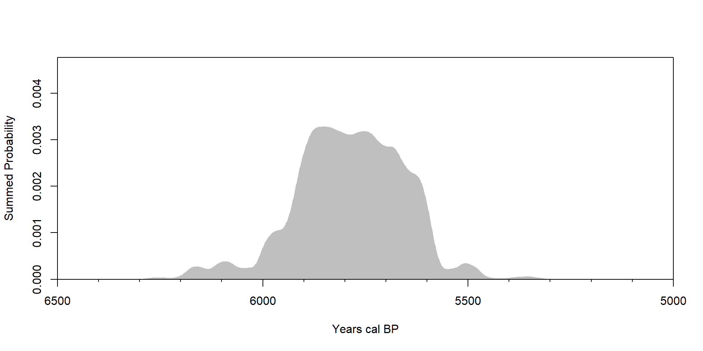
Metadata
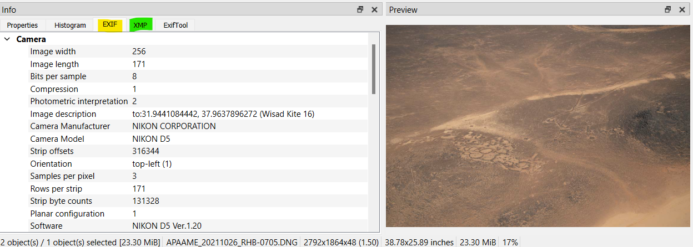
Computers in Archaeology
|
|
|
|---|---|

|
|
The 🔝 popular web-platform for source code management and software development (with over 128 million public repositories)
R is a scripting language for data science. It is the 1️⃣st used by archaeologists, and the 18th worldwide
- Tiobe index 2022 + Batist and Roe, 2022
| R | description |
|---|---|
| IDE | RStudio is THE graphical interface for R, Rstudio is also in the cloud (RStudio.cloud), VS Code is a standalone source code editor multi-platforms and multi-languages |
| layouts | R markdown is a notebook interface for report generation, Shiny allows the development of web interactive applications, Quarto to create Powerpoint-like web interactive documents |
| libraries | openxlsx to read/write Excel files, ggplot2 to create plots, sf makes R a GIS, igraph for network analysis, ODBC to connect SQL databases, rcarbon for radiocarbon dates calibration, Momocs for geometric morphometric methods, leaflet creates interactive maps, plotly creates interactive plots, etc. |
| resources | sthda.com has good tutorials, stackoverflow is probably the place where you will find the answer you need, if you need some open software for archaeology go to open-archaeo |
Python is a high-level programming language. It is the 2️⃣st programming language used by archaeologists, and the 1️⃣st worldwide
- Tiobe index 2022 + Batist and Roe, 2022
| Python | description |
|---|---|
| IDE | VS Code is THE best standalone source code editor multi-platforms and multi-languages. The Google colab.research.google.com online platform |
| layouts | Jupyter is a notebook interface for report generation. Dash allows the development of web interactive applications, Quarto to create Powerpoint-like web interactive documents |
| libraries | openpyxl to read/write Excel files, matplotlib to create plots, Geopandas makes PythonR a GIS, networkx for network analysis, pyodbc to connect SQL databases, iosacal for radiocarbon dates calibration, folium creates interactive leaflet maps, plotly creates interactive plots, etc. |
| resources | stackoverflow is probably the place where you will find the answer you need, if you need some open software for archaeology go to open-archaeo |
Thank you